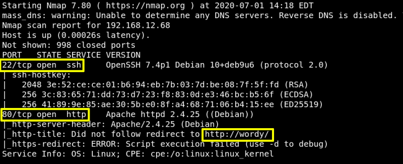
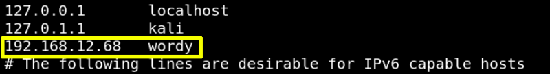

2. Finding Services and Ports
a) Run nmap.
$nmap
-A 192.168.12.68
Output:

As a result we found the port 22 and 80 are opened.
HTTP services are made to redirected on domain http://wordy.
b) On your Kali Machine, add the Domain Name into our Host file, so that we will be able to access http services.
Add the following line:
192.168.12.68 wordy
$gedit
/
etc
/
hosts
$cat
/
etc
/
hosts
Output:

Index